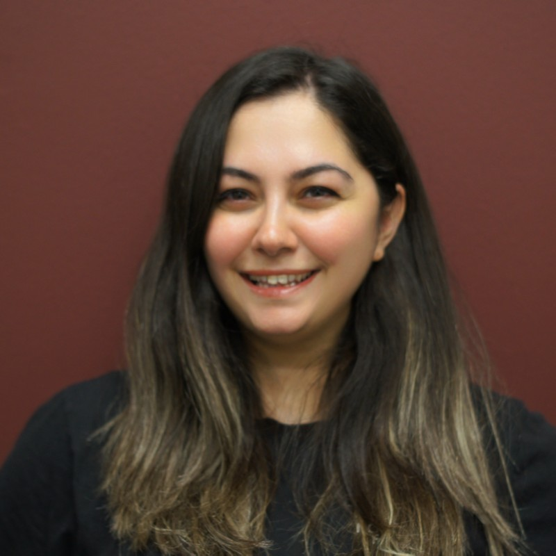

Merve Sağlam is a PhD candidate at Texas A&M University, working on cowpea breeding and genetics. She completed her B.S. in Molecular Biology and Genetics at Bilecik Şeyh Edebali University in 2016 and earned her M.S. in Biotechnology from Eskişehir Technical University in 2020. After two years in the private sector focusing on cell culture and real-time PCR applications, she was awarded the YLSY Scholarship in 2019 and began her PhD in 2022. Within the scope of the program, she is affiliated with Selçuk University.
Özgür: What motivated you to pursue a PhD in the United States?
Merve: When I was five or six years old, I watched a news report about a PhD student conducting research in the United States. I do not know exactly why, but at that moment I decided that I wanted to earn a PhD and become a researcher. Since then, I have consistently worked toward that goal.
Özgür: What project are you currently working on?
Merve: I am working on cowpea breeding and genetics, focusing on improving traits related to crop performance and resilience. The goal is to contribute to sustainable agricultural production through genetic improvement.
Özgür: What kind of feedback does your supervisor give you about your performance?
Merve: My supervisor, Dr. Endang Septiningsih, is very supportive. She encourages me to attend conferences, publish papers, and continue developing myself both academically and personally. I feel fortunate to work in an environment where growth is actively supported.
Özgür: What does success mean to you?
Merve: I am not strongly success-oriented in a traditional sense. I believe that if someone truly loves their work, success follows naturally. For me, success means feeling fulfilled and knowing that I am contributing meaningfully. I do not think success should be evaluated only through strict or numerical metrics.
Özgür: Do you prefer working independently or as part of a team?
Merve: I prefer working with others. I believe teamwork produces stronger outcomes. At the same time, each team member must take individual responsibility. Being productive individually strengthens the team as a whole.
Özgür: How do you generally handle conflict in academic life?
Merve: I consider myself easygoing, so I do not often experience major conflicts. However, I believe empathy is essential in resolving disagreements. Every situation has multiple perspectives, and listening carefully helps build constructive solutions.
Özgür: What advice would you give to students selecting a principal investigator?
Merve: Choosing a PI is one of the most important decisions in graduate education. It shapes academic development, personal well-being, and even long-term career direction. I recommend contacting former students to better understand the lab culture, advising style, and expectations. Former students may provide more transparent insights than current students.
Özgür: What are your future plans? Academia or industry?
Merve: I plan to return to Türkiye and work as an assistant professor. I am also considering completing a postdoctoral position beforehand. I still have time to explore options and remain open to opportunities.
Özgür: What should graduate students focus on to grow academically?
Merve: Rather than chasing success directly, students should aim for balance between academic and personal life. Reading scientific literature regularly is essential to expand knowledge and identify research gaps. Curiosity and consistency are key.
Özgür: Who is Merve beyond academia?
Merve: I would describe myself as social, extroverted, and easygoing. I enjoy organizing events, cooking, listening to jazz music, and exploring Asian cuisine. Walking and reading are also part of my routine. Maintaining a balanced personal life supports my academic productivity.
Özgür: What has been the most challenging moment in your PhD so far?
Merve: One of the most challenging moments of my PhD was my candidacy exam. It was a demanding period both intellectually and emotionally. However, after completing the exam, I felt relieved and more confident. It became an important milestone that strengthened my sense of progress in the program.
Özgür: What has been the biggest difference between studying in Türkiye and in the United States?
Merve: Both systems have their own advantages and disadvantages. However, in the United States there is strong emphasis on research independence and active discussion within academic environments. This encourages students to express their ideas more openly.
Özgür: How does being a YLSY scholar shape your sense of responsibility?
Merve: Türkiye is funding my education, and I feel a strong sense of responsibility toward that support. Whenever I face moments of doubt or difficulty, I remind myself of that responsibility. It motivates me to continue working and to make the most of this opportunity.
Özgür: Thank you so much for your time. It was a real pleasure to talk with you and hear your insights.
Merve: You are very welcome. I would be happy to continue this conversation in person soon.

Merve Sağlam is a PhD candidate at Texas A&M University working on cowpea breeding and genetics...
Özgür: What motivated you to pursue a PhD in the United States?
Merve: When I was five or six years old...
Özgür: What project are you currently working on?
Merve: I am working on cowpea breeding and genetics...